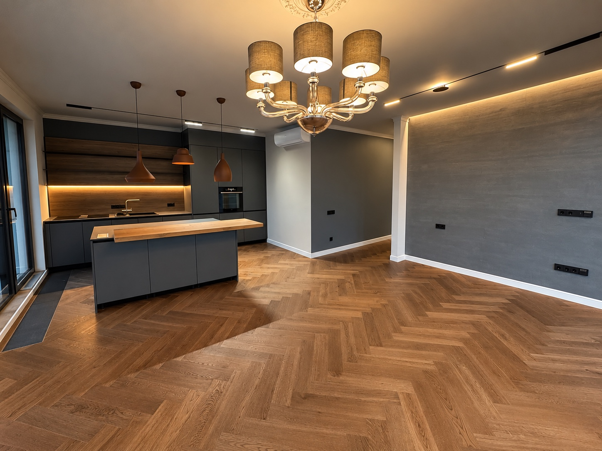

ПРОЕКТ 03 / FORMA
Квартира у воды — процесс и результат
Жилой интерьер · От черновых работ до готового интерьера
Показываем этапы выполнения работ и итоговый интерьер одной квартиры. Все ремонтные и отделочные работы выполнены нашей бригадой.

ПРОЦЕСС РЕМОНТА / 04 ФОТО
ГОТОВЫЙ РЕЗУЛЬТАТ / 08 ФОТО